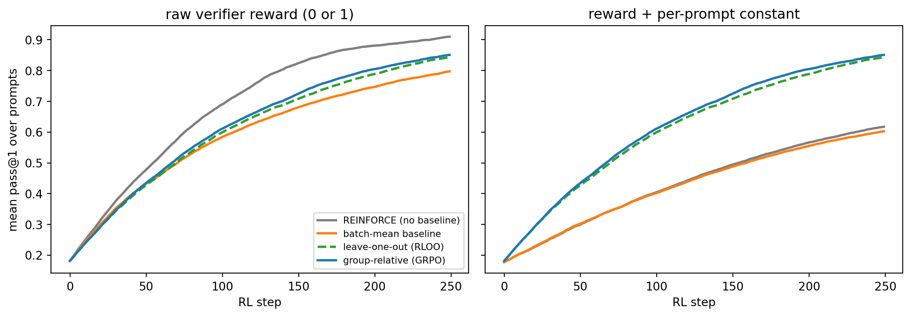

259Reinforcement Learning for Language Model Reasoning
The previous chapters of this part built reinforcement learning from the ground up: bandits, Markov decision processes, temporal-difference learning, policy gradients, and the offline and model-based methods of Chapter 258. This chapter shows where all of that machinery ended up doing its most visible work. Since late 2024 the strongest reasoning models, from OpenAI’s o-series (Chapter 261) to DeepSeek-R1 (Section 262.5), have been produced by running reinforcement learning on a pre-trained language model against rewards that a program can check. The algorithms involved are not exotic. They are REINFORCE with a well-chosen baseline, a PPO-style clipped surrogate, and a KL leash. What is new is the setting: an action space of a hundred thousand tokens, episodes thousands of steps long, a reward that arrives only at the very end, and a policy that already knows a great deal before RL begins.
Two chapters already cover adjacent ground, and this one is written to complement them rather than repeat them. Chapter 270 develops RLHF, DPO, and the GRPO objective in detail, including the training-inference mismatch and token-level credit via counterfactual replay (Section 270.2.3). Chapter 262 covers reasoning models as products, test-time search, process reward models (Section 262.6.1), and distribution-matching alternatives to reward maximization (Section 262.12). Here we focus on the reinforcement-learning view: what MDP the model is solving, why the group baseline works, where the reward comes from and how it gets hacked, how credit flows over long chains, why exploration collapses, and how all of it extends to agents that use tools.
259.1 Generation as a Token-Level MDP
Start with the formal object. Given a prompt \(x\), a language model \(\pi_\theta\) produces a response \(y = (y_1, \dots, y_T)\) one token at a time. Read this as a Markov decision process:
State\(s_t = (x, y_{<t})\), the prompt plus everything generated so far.
Action\(a_t = y_t\), the next token, drawn from a vocabulary \(\mathcal{V}\) of perhaps \(10^5\) entries.
Transition\(s_{t+1} = (x, y_{\le t})\), which is deterministic: appending a token always produces exactly one next state.
Reward\(r_t = 0\) for \(t < T\), and \(r_T = R(x, y)\) when the end-of-sequence token is emitted.
Discount\(\gamma = 1\), since the episode is finite and only the final outcome matters.
This framing, standard in RL texts [3] and used explicitly in benchmarks such as RL4LMs by Ramamurthy et al. (2023) [4], makes two properties of the problem obvious. The dynamics are known and trivial, so all of the difficulty is in the policy and the reward. And the reward is maximally sparse: one scalar for an entire trajectory, which may be thousands of tokens long for a reasoning model.
An equivalent and often more convenient view collapses the whole response into a single action and treats the problem as a contextual bandit (Chapter 254): the context is \(x\), the arm is the complete response \(y\), and the payoff is \(R(x,y)\). The two views give the same policy gradient. They differ in what they suggest about credit assignment, a theme we return to below. Rafailov et al. (2024) [5] showed that even DPO, which is usually derived in the bandit view, can be re-derived in the token-level MDP, where the log-probability ratio to the reference acts as an implicit per-token \(Q\)-function.
The KL-regularized objective of RLHF also has a clean token-level form. Expanding \(\mathbb{D}_{\mathrm{KL}}(\pi_\theta \| \pi_{\text{ref}})\) along the sequence turns the regularizer into a per-token reward, \[
r_t = -\beta \log \frac{\pi_\theta(y_t \mid s_t)}{\pi_{\text{ref}}(y_t \mid s_t)} \quad (t < T),
\qquad
r_T = R(x,y) - \beta \log \frac{\pi_\theta(y_T \mid s_T)}{\pi_{\text{ref}}(y_T \mid s_T)},
\] so the KL penalty is dense even when the task reward is not. This is the form PPO-based RLHF optimizes, and it is the reason the reference model must be evaluated on every token of every rollout.
259.2 Policy Gradients for Whole Sequences
With \(\gamma = 1\) and a terminal reward, the policy-gradient theorem from Chapter 257 reduces to REINFORCE [2]: \[
\nabla_\theta J(\theta)
= \mathbb{E}_{x,\, y\sim\pi_\theta(\cdot\mid x)}\Big[\big(R(x,y) - b(x)\big) \sum_{t=1}^{T} \nabla_\theta \log \pi_\theta(y_t \mid s_t)\Big],
\] where \(b(x)\) is any baseline that does not depend on the sampled response. The baseline leaves the expected gradient unchanged and can only change its variance. The ideal baseline is close to the prompt’s expected reward \(V^\pi(x) = \mathbb{E}_{y\sim\pi}[R(x,y)]\), because then \(R - b\) is the advantage of this response over a typical response to the same prompt.
Classical RLHF, as in InstructGPT [16], learns \(V^\pi\) with a value network the size of the policy itself, trained alongside the PPO policy. The reasoning-era insight is that for a language model it is cheaper to estimate \(V^\pi(x)\) by sampling. Draw a group of \(G\) responses \(y_1, \dots, y_G\) to the same prompt, score them, and use the other members of the group as the baseline:
RLOO (REINFORCE leave-one-out), studied for RLHF by Ahmadian et al. (2024) [6], uses \(b_i = \frac{1}{G-1}\sum_{j\neq i} R(x, y_j)\). Because the baseline for response \(i\) excludes response \(i\), it is independent of it, and the estimator is unbiased.
ReMax, by Li et al. (2024) [7], uses the reward of the greedy decode as the baseline, one extra generation per prompt.
GRPO, used to train DeepSeek-R1 [1] and derived in Chapter 270, standardizes rewards within the group: \(\hat A_i = (R_i - \bar R)/\operatorname{std}(R)\).
The group mean and the leave-one-out mean are closer relatives than they look. Writing \(\bar R = \frac{1}{G}\sum_j R_j\) and \(\bar R_{-i} = \frac{1}{G-1}\sum_{j\neq i} R_j\), \[
R_i - \bar R = R_i - \frac{R_i + (G-1)\bar R_{-i}}{G} = \frac{G-1}{G}\big(R_i - \bar R_{-i}\big),
\] so mean-centering within the group is exactly the unbiased leave-one-out estimator scaled by \((G-1)/G\). The division by the group standard deviation is a different matter. It rescales each prompt’s contribution by the inverse of its reward spread, which up-weights prompts that are nearly always solved or nearly always failed. That reweighting changes the objective, and several 2025 analyses argued for dropping it, along with GRPO’s per-response length normalization, which biases updates toward longer wrong answers. We will see both choices again in the DAPO recipe below.
259.3 Reinforcement Learning With Verifiable Rewards
The reward \(R(x,y)\) in classical RLHF is a learned reward model fit to human preferences (Chapter 270). Reasoning RL replaced it, wherever possible, with a program. For a math problem the program extracts the final answer and compares it with the reference. For code it runs unit tests. For instruction following it checks format constraints. This regime is called reinforcement learning with verifiable rewards (RLVR), a term popularized by the Tülu 3 post-training report from the Allen Institute for AI. A verifier is cheap, deterministic, and, crucially, much harder to fool than a neural reward model, so the policy can be optimized against it for far longer before it starts exploiting errors.
The landmark result is DeepSeek-R1 [1]. Its R1-Zero variant applied GRPO directly to a pre-trained base model with only two rule-based rewards, answer accuracy and adherence to a simple thinking-then-answering format, and no supervised fine-tuning first. Over training, the average response length grew steadily, the model began to re-check and revise its own work, and accuracy on competition mathematics rose to the level of OpenAI’s o1. The full R1 pipeline added a small cold-start supervised stage and further RL to fix readability and language mixing, but the scientific point stood: long chain-of-thought reasoning can be elicited by outcome rewards alone. Earlier work had pointed in this direction. STaR by Zelikman et al. (2022) [27] repeatedly fine-tuned a model on its own rationales that reached correct answers, which is a form of policy improvement with a binary verifier, and the same idea survives in modern pipelines as rejection-sampling fine-tuning.
259.3.1 A Toy RLVR Problem: Plain REINFORCE Versus a Group Baseline
We now build an RLVR problem that runs on a CPU in seconds and keeps every essential feature. Each prompt is an addition problem \(a + b\) with \(a, b \in \{0, \dots, 9\}\). The answer is written as two tokens, a tens digit and a ones digit, generated autoregressively, so each episode is a two-step token-level MDP. The verifier returns 1 if both tokens are right and 0 otherwise, and that is the only feedback.
The policy is tabular: one vector of logits for the first token per prompt, and one per prompt and first token for the second. To mimic a pre-trained model, the initial logits give each prompt a different prior “skill” on its correct answer, so some prompts start nearly solved and others nearly hopeless, which is exactly the heterogeneity RLVR faces in practice.
import numpy as npimport matplotlib.pyplot as pltrng0 = np.random.default_rng(0)N_PROMPTS, V, G, P =64, 10, 8, 16# prompts, vocab per digit, group size, prompts per batchI = np.arange(N_PROMPTS)a = rng0.integers(0, 10, N_PROMPTS)b = rng0.integers(0, 10, N_PROMPTS)tens, ones = (a + b) //10, (a + b) %10# the two answer tokens the verifier checks# "Pre-trained" initial policy: random logits plus a per-prompt bonus on the correct# tokens, so prior skill varies widely across prompts.L1_base = rng0.normal(size=(N_PROMPTS, V)) # logits for token 1 given xL2_base = rng0.normal(size=(N_PROMPTS, V, V)) # logits for token 2 given (x, token 1)skill = rng0.uniform(-0.5, 3.5, N_PROMPTS)L1_base[I, tens] += skillL2_base[I, tens, ones] += skill# A prompt-level reward offset, used later. A Bradley-Terry reward model is only# identified up to such a constant per prompt (see the RLHF chapter).prompt_offset = rng0.normal(0.0, 1.0, N_PROMPTS)def softmax(z): z = z - z.max(-1, keepdims=True) e = np.exp(z)return e / e.sum(-1, keepdims=True)def pass_at_1(L1, L2):"""Exact probability that a sampled answer is correct, per prompt."""return softmax(L1)[I, tens] * softmax(L2)[I, tens, ones]p0 = pass_at_1(L1_base, L2_base)print(f"initial mean pass@1: {p0.mean():.3f}")print(f"prompts with pass@1 < 0.05: {(p0 <0.05).mean():.0%} "f"prompts with pass@1 > 0.5: {(p0 >0.5).mean():.0%}")print(f"probability a group of {G} has all-equal rewards, averaged over prompts: "f"{np.mean(p0**G + (1- p0)**G):.2f}")
initial mean pass@1: 0.175
prompts with pass@1 < 0.05: 50% prompts with pass@1 > 0.5: 11%
probability a group of 8 has all-equal rewards, averaged over prompts: 0.52
The last line is worth pausing on. When every response in a group gets the same reward, all group-relative advantages are zero and the group contributes no gradient. With heterogeneous prompts, a large share of each batch is wasted this way from the start. We will watch that share change during training.
Now the four estimators. Plain REINFORCE uses no baseline. The batch-mean baseline subtracts the average reward over the whole batch, a single number for all prompts, which is the simplest “plain REINFORCE baseline”. RLOO and GRPO use the group. To compare direction quality rather than step size, every method takes a step of fixed length along its own normalized gradient estimate, a stand-in for the scale invariance of adaptive optimizers. We train under two reward encodings: the raw 0 or 1 verifier output, and the same output plus the per-prompt offset defined above, which mimics the arbitrary prompt-level constant that a learned reward model carries.
METHODS = ["REINFORCE (no baseline)", "batch-mean baseline","leave-one-out (RLOO)", "group-relative (GRPO)"]def advantages(r, method): rg = r.reshape(-1, G)if method == METHODS[0]:return rif method == METHODS[1]:return r - r.mean()if method == METHODS[2]:return (rg - (rg.sum(1, keepdims=True) - rg) / (G -1)).ravel()return ((rg - rg.mean(1, keepdims=True)) / (rg.std(1, ddof=1, keepdims=True) +1e-6)).ravel()def sample_batch(L1, L2, rng): x = np.repeat(rng.integers(0, N_PROMPTS, P), G) # G rollouts per prompt p1 = softmax(L1[x]); t1 = (p1.cumsum(1) > rng.random((x.size, 1))).argmax(1) p2 = softmax(L2[x, t1]); t2 = (p2.cumsum(1) > rng.random((x.size, 1))).argmax(1)return x, t1, t2, p1, p2def policy_gradient(x, t1, t2, p1, p2, adv):"""REINFORCE: sum over both tokens of adv * grad log pi, for softmax logits.""" n = x.size g1, g2 = np.zeros_like(L1_base), np.zeros_like(L2_base) s1 =-p1; s1[np.arange(n), t1] +=1# grad of log softmax s2 =-p2; s2[np.arange(n), t2] +=1 np.add.at(g1, x, adv[:, None] * s1 / n) np.add.at(g2, (x, t1), adv[:, None] * s2 / n)return g1, g2def train(method, use_offset, seed, steps=250, lr=1.0): rng = np.random.default_rng(seed) L1, L2 = L1_base.copy(), L2_base.copy() acc, dead = [], []for _ inrange(steps): x, t1, t2, p1, p2 = sample_batch(L1, L2, rng) r = ((t1 == tens[x]) & (t2 == ones[x])).astype(float) # the verifier dead.append((r.reshape(-1, G).std(1) ==0).mean()) # zero-signal groupsif use_offset: r = r + prompt_offset[x] g1, g2 = policy_gradient(x, t1, t2, p1, p2, advantages(r, method)) norm = np.sqrt((g1 **2).sum() + (g2 **2).sum())if norm >1e-8: # fixed-length step L1 += lr * g1 / norm L2 += lr * g2 / norm acc.append(pass_at_1(L1, L2).mean())return np.array(acc), np.array(dead)SEEDS =range(6)curves, dead_frac = {}, {}for use_offset in (False, True):for m in METHODS: runs = [train(m, use_offset, s) for s in SEEDS] curves[use_offset, m] = np.array([r[0] for r in runs]) dead_frac[use_offset, m] = np.array([r[1] for r in runs])print(f"{'estimator':<26}{'raw reward':>12}{'with offset':>13} (final mean pass@1)")for m in METHODS:print(f"{m:<26}{curves[False, m][:, -1].mean():>12.3f}{curves[True, m][:, -1].mean():>13.3f}")for m in METHODS[2:]: diff = np.abs(curves[True, m] - curves[False, m]).max()print(f"max |curve(offset) - curve(raw)| for {m}: {diff:.1e}")d = dead_frac[False, METHODS[3]].mean(0)print(f"GRPO: share of groups with zero reward variance, first 10 steps {d[:10].mean():.2f}, "f"last 10 steps {d[-10:].mean():.2f}")colors = ["tab:gray", "tab:orange", "tab:green", "tab:blue"]fig, axes = plt.subplots(1, 2, figsize=(11, 3.9), sharey=True)for ax, use_offset, title in [(axes[0], False, "raw verifier reward (0 or 1)"), (axes[1], True, "reward + per-prompt constant")]:for m, c inzip(METHODS, colors): mean = curves[use_offset, m].mean(0) ls ="--"if m == METHODS[2] else"-" ax.plot(mean, color=c, lw=2, ls=ls, label=m) ax.set_title(title) ax.set_xlabel("RL step")axes[0].set_ylabel("mean pass@1 over prompts")axes[0].legend(fontsize=8, loc="lower right")fig.tight_layout()plt.show()
estimator raw reward with offset (final mean pass@1)
REINFORCE (no baseline) 0.910 0.617
batch-mean baseline 0.797 0.603
leave-one-out (RLOO) 0.843 0.843
group-relative (GRPO) 0.851 0.851
max |curve(offset) - curve(raw)| for leave-one-out (RLOO): 2.2e-16
max |curve(offset) - curve(raw)| for group-relative (GRPO): 2.2e-16
GRPO: share of groups with zero reward variance, first 10 steps 0.49, last 10 steps 0.79

Figure 259.1: Mean pass@1 during RL on the two-token addition task, averaged over seeds. Left: with the raw 0 or 1 verifier reward, all estimators learn, and plain REINFORCE does well because zero is already a decent baseline for hard prompts. Right: adding a per-prompt constant to the reward, as a learned reward model would, cripples plain REINFORCE and the batch-mean baseline, while the leave-one-out and group-relative estimators are unaffected because their advantages cancel any per-prompt constant exactly.
Three lessons come out of this small experiment, and each one has a counterpart at scale.
First, a baseline is about robustness, not magic. With a raw binary reward, zero is already a reasonable baseline for the many prompts the model usually fails, and plain REINFORCE learns well. Once the reward contains a prompt-dependent constant, as it does whenever the reward comes from a learned model or mixes in a format bonus, the estimators without a per-prompt baseline spend most of their gradient pushing on that constant. The group-relative advantages are mathematically invariant to it, so their curves in the two panels coincide to floating-point precision, as the printed difference confirms.
Second, the dead-group problem grows as training succeeds. The printed share of groups with zero reward variance rises over training, because prompts that become reliably solved produce all-correct groups, which carry no group-relative signal. At scale, this is one reason the DAPO recipe described below over-samples prompts and discards groups whose rewards are all equal.
Third, direction is what matters. All four methods share the same expected gradient up to scaling and per-prompt reweighting. They differ in how much of each noisy estimate points somewhere useful, which is why the group size \(G\), the prompt mix, and the reward encoding are first-class hyperparameters in RLVR.
259.4 Outcome and Process Rewards
A verifier that checks only the final answer is an outcome reward model (ORM). It is reliable but sparse, and it rewards a correct answer reached by flawed reasoning just as much as a sound derivation. A process reward model (PRM) scores each intermediate step. Lightman et al. (2024) [9] collected 800,000 human step-level labels on solutions to MATH problems (the PRM800K dataset) and found that process supervision trained a substantially better verifier than outcome supervision for selecting among sampled solutions. Human step labels are expensive, so Math-Shepherd by Wang et al. (2024) [10] labeled steps automatically: from each intermediate step, roll out several completions and label the step by how often they reach the correct answer. This is a Monte Carlo estimate of the step’s value, exactly the quantity a critic would learn.
Setlur et al. (2025) [11] sharpened the idea with a clean RL interpretation. A good process reward should measure progress, the change in the probability of eventually succeeding before and after the step, which is an advantage \(A(s_t, a_t) = Q(s_t,a_t) - V(s_t)\) rather than a value. They estimate it under a separate “prover” policy and show that such process advantage verifiers improve both test-time search and the sample efficiency of online RL. Two cautions apply. A neural PRM is a learned reward, so it reintroduces the hacking problems of the next section, and the hierarchical reward models of Section 262.6.1 address a specific failure in how PRMs score recoverable mistakes. In practice, most frontier RLVR pipelines of 2025 trained against outcome verifiers and used process models mainly for test-time selection and analysis.
259.5 Reward Hacking and KL Control
Any reward we can compute is a proxy for what we actually want. Skalse et al. (2022) [14] give the formal statement: a proxy is “unhackable” with respect to a true reward if increasing the expected proxy return can never decrease the expected true return, and they show that, over all stochastic policies, two reward functions can be unhackable only in degenerate cases such as one of them being constant. So we should expect optimization pressure to eventually find the gap between proxy and truth, and the only questions are how fast and how badly.
Gao et al. (2023) [13] measured this directly with a synthetic setup in which a large “gold” reward model plays the role of humans and a smaller proxy is trained on its labels. As the policy is optimized against the proxy, the gold reward first rises and then falls. Measured against the distance \(d = \sqrt{\mathbb{D}_{\mathrm{KL}}(\pi\|\pi_{\text{ref}})}\) that the policy has moved from its initialization, they fit \(R_{\text{gold}}(d) = d(\alpha - \beta \log d)\) for RL and \(R_{\text{gold}}(d) = d(\alpha - \beta d)\) for best-of-\(n\) sampling, with coefficients that improve smoothly as the reward model grows. The KL penalty in the RLHF objective is precisely a brake on \(d\).
The cell below reproduces the qualitative shape exactly. A KL-regularized objective has the closed-form optimum derived in Chapter 270, \[
\pi_\beta^\star(y\mid x) \propto \pi_{\text{ref}}(y\mid x)\exp\big(R_{\text{proxy}}(x,y)/\beta\big),
\] so we can trace the whole family of optimal policies as \(\beta\) shrinks, without any training noise. The proxy equals the true reward plus an error that is larger for responses the reference rarely produces, mimicking a reward model that is least accurate where it saw the least data, the same pattern as the offline value functions of Chapter 258.
Figure 259.2: Reward overoptimization traced by the exact KL-regularized optimal policy as the KL coefficient beta decreases. The proxy reward the policy optimizes rises monotonically with the distance from the reference, but the true reward peaks and then falls once the policy starts selecting rare responses whose proxy scores are inflated by reward-model error. The KL coefficient decides where on this curve training stops.
Past the peak, every further unit of proxy reward is bought with true reward. This is reward hacking in its purest form, with no optimizer pathology involved, since every point on the curve is the exact optimum of its objective. Real hacking takes concrete forms. In RLHF, Wen et al. (2025) [15] found that RLHF against human approval made models better at convincing human evaluators that wrong answers were right, raising evaluators’ false-positive rates on question answering and programming tasks, a result whose experimental setup has since been publicly debated. In RLVR the classic failures are verifier bugs: answer extractors that accept a list of every candidate answer, unit tests that a program can special-case or skip, and format checks that reward the appearance of reasoning.
The defenses are layered. Keep a KL penalty or a trust region so the policy cannot move far in one step. Hold out a stronger evaluator (a larger reward model, a human audit, or an independent test suite) and stop when it disagrees with the training reward. Harden verifiers adversarially, since the policy is the most thorough fuzzer you will ever run against them. Notably, several reasoning-RL recipes removed the KL term entirely when training against reliable verifiers, as DAPO did, trading the leash for faster progress. That is reasonable only when the reward really is hard to game.
259.6 Credit Assignment Over Long Chains
With an outcome reward, every token of a ten-thousand-token derivation receives the same advantage. The useful step, the arithmetic slip, and the filler words are all reinforced or suppressed together, and only averaging over many rollouts separates them. The REINFORCE estimator remains unbiased, but its variance grows with the number of tokens whose contributions are noise. Four ways to sharpen credit have been developed.
Learned critics. PPO’s value network provides a per-token baseline \(V(s_t)\) and per-token advantages through generalized advantage estimation. Kazemnejad et al. (2025) [12] found that in reasoning tasks these value networks are poor, barely better than a random baseline at ranking alternative next steps.
Monte Carlo critics. Their method, VinePPO, exploits the fact that a language-model environment can be reset to any intermediate state for free: from each step, sample a few completions and use their mean outcome as \(V(s_t)\). This is the same estimate Math-Shepherd used for labels, now used inside the optimizer. It costs extra generation but reaches better accuracy in fewer gradient steps and less wall-clock time.
Process rewards. A PRM or progress verifier supplies dense step rewards directly, at the cost of a learned, hackable component.
Redistribution within the response. Methods such as the counterfactual-replay credit of Section 270.2.3 keep the response-level advantage but reallocate it across tokens according to a cheap signal of which tokens mattered.
The token-level MDP view clarifies why option 2 is natural for language models but rare in classical RL. In robotics, resetting the world to an arbitrary intermediate state is impossible, so critics must be learned. In text generation, the state is just a prefix, and branching from it costs one more forward pass.
259.7 Exploration and Entropy Collapse
Reinforcement learning on a pre-trained model starts with an unusual exploration profile. The policy is already highly concentrated, and reward-driven updates make it more so. A short calculation shows why entropy tends to fall. Take a softmax policy over actions with logits \(z\), and consider a natural-gradient step \(\Delta z_a = \eta A(a)\). Using \(\partial H/\partial z_b = -\pi_b(\log \pi_b + H)\) for the entropy \(H = -\sum_a \pi_a \log \pi_a\), \[
\Delta H \approx -\eta \sum_b \pi_b(\log\pi_b + H)\, A(b)
= -\eta\, \operatorname{Cov}_{a\sim\pi}\big(\log \pi(a),\, A(a)\big).
\] Entropy falls whenever actions that are already likely also tend to have positive advantage, which is the common case once a model is decent, because its high-probability answers are usually its correct ones. Each successful update makes the next one more concentrated. The cell below checks the formula numerically.
rng = np.random.default_rng(3)z = rng.normal(0, 2, 50) # logits of a peaked softmax policypi = softmax(z)A =0.8* np.log(pi) + rng.normal(0, 1, 50) # advantages correlated with log-probabilityA -= pi @ A # advantages have zero mean under pieta =1e-3entropy =lambda p: -(p * np.log(p)).sum()dH_exact = entropy(softmax(z + eta * A)) - entropy(pi)cov = pi @ ((np.log(pi) - pi @ np.log(pi)) * A)print(f"actual entropy change: {dH_exact:+.6f}")print(f"-eta * Cov(log pi, A): {-eta * cov:+.6f}")
actual entropy change: -0.002730
-eta * Cov(log pi, A): -0.002733
Collapse is harmful because RL can only reinforce what it samples. If the policy stops producing a rare but correct line of reasoning, no future gradient can bring it back. The empirical picture of 2025 is consistent with this. Yue et al. (2025) [17] compared base models and their RLVR-trained versions at large sampling budgets and found that the RL model wins at pass@1 but the base model wins at large pass@k, and that the reasoning paths of the RL model were already present in the base model’s distribution. Current RLVR mostly sharpens existing ability onto fewer paths rather than creating new ones, while distillation from a stronger teacher can add genuinely new patterns. Wang et al. (2025) [18] looked inside the chains and found that only a minority of tokens, roughly a fifth, have high entropy. These “forking” tokens are where reasoning branches, and restricting the policy-gradient update to them matched or beat full updates, while training on only the low-entropy majority hurt.
Practical countermeasures follow from the covariance formula: raise the upper clipping bound of the PPO ratio so that low-probability tokens can grow (“clip-higher” in DAPO [8]), clip or down-weight updates on tokens with large positive covariance, add an entropy or KL bonus, keep sampling temperature at 1 during training, and filter prompts so every batch contains problems of intermediate difficulty. A more radical answer replaces reward maximization with distribution matching, as in the GFlowNet-based methods of Section 262.12, which keep probability on every high-reward mode instead of collapsing onto one.
259.7.1 The DAPO Recipe
DAPO by Yu et al. (2025) [8] collected these lessons into an open, reproducible recipe built on GRPO, and it is a useful checklist of what matters at scale. Training a 32-billion-parameter base model, they reported 50 points on AIME 2024 with four changes to GRPO: clip-higher, decoupling the lower and upper clip ranges to fight entropy collapse, dynamic sampling, over-sampling and discarding prompts whose groups are all correct or all wrong so every batch carries gradient (the dead-group problem from our toy), a token-level loss, averaging over all tokens in the batch rather than first within each response so long responses are not under-weighted, and overlong reward shaping, a soft length penalty in place of the noisy signal from truncated responses. They also dropped the KL penalty. None of these is a new algorithm. Each is a fix to how variance, scale, and exploration interact in a sparse-reward token-level MDP.
259.8 Agentic and Multi-Turn RL With Tools
A reasoning model that can call tools is solving a richer MDP. The trajectory now interleaves the model’s tokens with observations from an environment: search results, code execution output, file contents, a web page. The state at each turn is the full interaction history, the action is the model’s next message (often a tool call), and the transition is no longer deterministic, because the environment answers. ReAct by Yao et al. (2023) [22] established the prompting pattern of alternating reasoning and actions, and Toolformer by Schick et al. (2023) [23] showed that models can learn when to call tools from self-generated supervision. RL turns these patterns from imitation into optimization.
Three adjustments make standard RLVR work in this setting.
Mask environment tokens from the loss. Tool outputs are part of the context but are not actions the policy took. Search-R1 by Jin et al. (2025) [19] trained a model to interleave reasoning with search-engine queries using an outcome reward and explicitly masked retrieved tokens from the policy-gradient loss, which they found important for stable training.
Credit at the turn level. With many turns, assigning a single outcome to every token is even noisier. ArCHer by Zhou et al. (2024) [21] uses a hierarchy: an off-policy critic estimates values at the level of whole utterances, and a token-level policy is trained against those utterance-level advantages, which they report is far more sample efficient than on-policy token-level RL.
Cheap, faithful verifiers for long tasks. For software engineering, SWE-RL by Wei et al. (2025) [20] trained on the history of open-source repositories with a lightweight rule-based reward, the similarity between the generated patch and the real one, and reported a 70-billion-parameter model resolving 41.0 percent of SWE-bench Verified issues, with gains that transferred to out-of-domain reasoning tasks. Executing hidden test suites in sandboxes is the more faithful reward, and the more expensive one.
Agentic RL inherits every problem in this chapter at larger scale: longer horizons for credit assignment, stochastic environments for variance, and many more ways to hack the reward, for example by editing the tests rather than the code. It also inherits the systems problem of Chapter 270, the gap between the inference engine that generates rollouts and the trainer that computes gradients, made worse when rollouts wait on slow tools.
259.9 Connections to Test-Time Compute
RL and test-time compute (Chapter 262) are two sides of the same trade. RLVR teaches a model to use more tokens productively. DeepSeek-R1’s response length grew on its own during RL [1], so the model’s own sampling became a form of search. Test-time methods then spend compute: sample many responses and vote, search over steps with a verifier, or force the model to think longer. Snell et al. (2025) [24] showed that the best way to spend a fixed inference budget depends on problem difficulty, and that compute-optimal allocation can beat a model many times larger on problems where the small model has a non-trivial success rate. Muennighoff et al. (2025) [25] showed how far a cheap alternative to RL can go: supervised fine-tuning on 1,000 carefully chosen reasoning traces, plus “budget forcing” that appends “Wait” when the model tries to stop early, produced test-time scaling on competition math.
The deepest connection is the MuZero pattern from Chapter 258: search produces better targets than the policy alone, and training on those targets improves the policy that guides the next search. AlphaProof by Hubert et al. (2025) [26] applied an AlphaZero-style loop to formal proofs in the Lean theorem prover, trained on millions of auto-formalized problems, and added test-time RL: for the hardest problems it generated and trained on many related variants while solving. Together with a geometry system it reached silver-medal standard at the 2024 International Mathematical Olympiad. Verified formal proofs are the ultimate verifiable reward, since the checker cannot be fooled.
259.10 State of the Art (2024 to 2026)
The field moved quickly, and the following summary separates peer-reviewed results from announcements.
Late 2024: reasoning models arrive. OpenAI’s o1 (September 2024) demonstrated large-scale RL for long chain-of-thought reasoning but disclosed little about method (Chapter 261).
2025: the open recipe. DeepSeek-R1, released in January and published in Nature in September 2025 [1], showed that GRPO with rule-based rewards elicits long reasoning from a base model, and released weights. An open replication ecosystem followed. DAPO [8] (NeurIPS 2025) made the recipe reproducible at scale. Preprint analyses argued for removing GRPO’s length and standard-deviation normalizations, for value-based variants that recover PPO’s critic, and for computing importance ratios at the sequence rather than token level to stabilize training of mixture-of-experts models. These remain preprints at the time of writing and are not cited here.
2025: what RLVR does and does not do. Yue et al. [17] (NeurIPS 2025) established that RLVR mainly sharpens the base model’s existing distribution. Wang et al. [18] (NeurIPS 2025) localized learning to a minority of high-entropy forking tokens. Preprints reported that on some model families even random or deliberately incorrect rewards improve math benchmarks, a warning that gains can come from eliciting pre-trained behavior (such as writing code to compute answers) rather than from the reward signal, and that conclusions drawn from a single model family may not generalize.
2025: beyond math. RLVR spread to code with execution feedback, software engineering (SWE-RL [20]), search and tool use (Search-R1 [19]), and formal theorem proving (AlphaProof [26]). For tasks without a checker, rubric-based rewards scored by a judge model became common, which reintroduces reward hacking and motivates finer-grained credit such as Section 270.2.3.
2025: competition milestones. In July 2025, Google DeepMind and OpenAI each announced that experimental reasoning models produced natural-language solutions at gold-medal level for the International Mathematical Olympiad. These were announcements, not peer-reviewed papers, and the training details were not disclosed.
2025 and 2026: systems and stability. At frontier scale the bottleneck shifted from algorithm to infrastructure: asynchronous rollout generation, the training-inference probability mismatch (treated in Chapter 270), long-horizon agent environments, and verifier robustness. The open questions for 2026 are whether RL can expand a model’s reasoning beyond its pre-trained distribution rather than sharpen it, how to keep exploration alive over very long training, and how to obtain trustworthy rewards for tasks that no program can check.
259.11 Pitfalls
Trusting the training reward. A rising reward curve is consistent with real learning, with verifier exploitation, and with format gaming. Always track a held-out evaluation that the policy never trains against, and read samples.
Ignoring dead groups. If most groups have identical rewards, most of your compute produces zero gradient. Monitor the fraction, and filter or re-weight prompts to keep difficulty near the policy’s frontier.
Mismatched normalization. Per-response length normalization and per-group standard-deviation scaling silently change the objective. Know which your trainer uses, and be suspicious of response lengths that grow while accuracy does not.
Reading pass@1 alone. RL can raise pass@1 while lowering pass@k at large \(k\). If downstream use involves sampling many candidates (best-of-\(n\), search, majority voting), evaluate at that \(k\) as well.
Letting entropy collapse unnoticed. Log policy entropy per token. A fast early drop usually means the run will plateau. Clip-higher, temperature, entropy bonuses, and prompt curricula are cheaper than restarting.
Training on environment tokens. In agentic RL, including tool outputs in the policy-gradient loss trains the model to predict the environment rather than to act. Mask them.
Over-generalizing from one model family. Several 2025 findings, including surprising gains from weak or spurious rewards, held for some base models and not others. Test conclusions on more than one family before relying on them.
259.12 References
Guo, D., Yang, D., Zhang, H. et al. “DeepSeek-R1 Incentivizes Reasoning in LLMs through Reinforcement Learning.” Nature 645, 2025, 633–638. https://doi.org/10.1038/s41586-025-09422-z
Williams, R. J. “Simple Statistical Gradient-Following Algorithms for Connectionist Reinforcement Learning.” Machine Learning 8, 1992, 229–256. https://doi.org/10.1007/BF00992696
Sutton, R. S. and Barto, A. G. Reinforcement Learning: An Introduction, 2nd edition. MIT Press, 2018. http://incompleteideas.net/book/the-book-2nd.html
Ramamurthy, R., Ammanabrolu, P., Brantley, K., Hessel, J., Sifa, R., Bauckhage, C., Hajishirzi, H., and Choi, Y. “Is Reinforcement Learning (Not) for Natural Language Processing: Benchmarks, Baselines, and Building Blocks for Natural Language Policy Optimization.” International Conference on Learning Representations (ICLR), 2023. https://iclr.cc/virtual/2023/poster/10970
Rafailov, R., Hejna, J., Park, R., and Finn, C. “From \(r\) to \(Q^*\): Your Language Model is Secretly a Q-Function.” Conference on Language Modeling (COLM), 2024.
Ahmadian, A., Cremer, C., Gallé, M., Fadaee, M., Kreutzer, J., Pietquin, O., Üstün, A., and Hooker, S. “Back to Basics: Revisiting REINFORCE-Style Optimization for Learning from Human Feedback in LLMs.” Proceedings of the 62nd Annual Meeting of the Association for Computational Linguistics (ACL), 2024, 12248–12267. https://aclanthology.org/2024.acl-long.662
Li, Z., Xu, T., Zhang, Y., Lin, Z., Yu, Y., Sun, R., and Luo, Z.-Q. “ReMax: A Simple, Effective, and Efficient Reinforcement Learning Method for Aligning Large Language Models.” Proceedings of the 41st International Conference on Machine Learning (ICML), PMLR 235, 2024, 29128–29163. https://proceedings.mlr.press/v235/li24cd.html
Yu, Q. et al. “DAPO: An Open-Source LLM Reinforcement Learning System at Scale.” Advances in Neural Information Processing Systems 38 (NeurIPS), 2025. https://proceedings.neurips.cc/paper_files/paper/2025/hash/a4277440d50f1f15d2cb4c14f7e0c0d2-Abstract-Conference.html
Lightman, H., Kosaraju, V., Burda, Y., Edwards, H., Baker, B., Lee, T., Leike, J., Schulman, J., Sutskever, I., and Cobbe, K. “Let’s Verify Step by Step.” International Conference on Learning Representations (ICLR), 2024. https://proceedings.iclr.cc/paper_files/paper/2024/hash/aca97732e30bcf1303bc22ac3924fd16-Abstract-Conference.html
Wang, P., Li, L., Shao, Z., Xu, R., Dai, D., Li, Y., Chen, D., Wu, Y., and Sui, Z. “Math-Shepherd: Verify and Reinforce LLMs Step-by-step without Human Annotations.” Proceedings of the 62nd Annual Meeting of the Association for Computational Linguistics (ACL), 2024, 9426–9439. https://aclanthology.org/2024.acl-long.510
Setlur, A., Nagpal, C., Fisch, A., Geng, X., Eisenstein, J., Agarwal, R., Agarwal, A., Berant, J., and Kumar, A. “Rewarding Progress: Scaling Automated Process Verifiers for LLM Reasoning.” International Conference on Learning Representations (ICLR), 2025. https://iclr.cc/virtual/2025/poster/30649
Kazemnejad, A., Aghajohari, M., Portelance, E., Sordoni, A., Reddy, S., Courville, A., and Le Roux, N. “VinePPO: Refining Credit Assignment in RL Training of LLMs.” Proceedings of the 42nd International Conference on Machine Learning (ICML), PMLR 267, 2025, 29557–29590. https://proceedings.mlr.press/v267/kazemnejad25a.html
Gao, L., Schulman, J., and Hilton, J. “Scaling Laws for Reward Model Overoptimization.” Proceedings of the 40th International Conference on Machine Learning (ICML), PMLR 202, 2023, 10835–10866. https://proceedings.mlr.press/v202/gao23h.html
Skalse, J., Howe, N., Krasheninnikov, D., and Krueger, D. “Defining and Characterizing Reward Gaming.” Advances in Neural Information Processing Systems 35 (NeurIPS), 2022. https://proceedings.neurips.cc/paper_files/paper/2022/hash/3d719fee332caa23d5038b8a90e81796-Abstract-Conference.html
Wen, J., Zhong, R., Khan, A., Perez, E., Steinhardt, J., Huang, M., Bowman, S. R., He, H., and Feng, S. “Language Models Learn to Mislead Humans via RLHF.” International Conference on Learning Representations (ICLR), 2025. https://proceedings.iclr.cc/paper_files/paper/2025/hash/b9a5a60573637f329b04d1beda4cd404-Abstract-Conference.html
Ouyang, L. et al. “Training Language Models to Follow Instructions with Human Feedback” (InstructGPT). Advances in Neural Information Processing Systems 35 (NeurIPS), 2022. https://proceedings.neurips.cc/paper_files/paper/2022/hash/b1efde53be364a73914f58805a001731-Abstract-Conference.html
Yue, Y. et al. “Does Reinforcement Learning Really Incentivize Reasoning Capacity in LLMs Beyond the Base Model?” Advances in Neural Information Processing Systems 38 (NeurIPS), 2025. https://neurips.cc/virtual/2025/poster/119944
Wang, S. et al. “Beyond the 80/20 Rule: High-Entropy Minority Tokens Drive Effective Reinforcement Learning for LLM Reasoning.” Advances in Neural Information Processing Systems 38 (NeurIPS), 2025. https://neurips.cc/virtual/2025/poster/115123
Jin, B., Zeng, H., Yue, Z., Yoon, J., Arik, S., Wang, D., Zamani, H., and Han, J. “Search-R1: Training LLMs to Reason and Leverage Search Engines with Reinforcement Learning.” Conference on Language Modeling (COLM), 2025.
Wei, Y. et al. “SWE-RL: Advancing LLM Reasoning via Reinforcement Learning on Open Software Evolution.” Advances in Neural Information Processing Systems 38 (NeurIPS), 2025. https://proceedings.neurips.cc/paper_files/paper/2025/hash/7107d4d2e837bde2171c6b71b5bde954-Abstract-Conference.html
Zhou, Y., Zanette, A., Pan, J., Levine, S., and Kumar, A. “ArCHer: Training Language Model Agents via Hierarchical Multi-Turn RL.” Proceedings of the 41st International Conference on Machine Learning (ICML), PMLR 235, 2024, 62178–62209. https://proceedings.mlr.press/v235/zhou24t.html
Yao, S., Zhao, J., Yu, D., Du, N., Shafran, I., Narasimhan, K., and Cao, Y. “ReAct: Synergizing Reasoning and Acting in Language Models.” International Conference on Learning Representations (ICLR), 2023. https://iclr.cc/virtual/2023/poster/11003
Schick, T., Dwivedi-Yu, J., Dessì, R., Raileanu, R., Lomeli, M., Hambro, E., Zettlemoyer, L., Cancedda, N., and Scialom, T. “Toolformer: Language Models Can Teach Themselves to Use Tools.” Advances in Neural Information Processing Systems 36 (NeurIPS), 2023. https://proceedings.neurips.cc/paper/2023/hash/d842425e4bf79ba039352da0f658a906-Abstract.html
Snell, C., Lee, J., Xu, K., and Kumar, A. “Scaling LLM Test-Time Compute Optimally Can be More Effective than Scaling Parameters for Reasoning.” International Conference on Learning Representations (ICLR), 2025. https://proceedings.iclr.cc/paper_files/paper/2025/hash/1b623663fd9b874366f3ce019fdfdd44-Abstract-Conference.html
Muennighoff, N., Yang, Z., Shi, W., Li, X. L. et al. “s1: Simple Test-Time Scaling.” Proceedings of the 2025 Conference on Empirical Methods in Natural Language Processing (EMNLP), 2025, 20275–20321. https://aclanthology.org/2025.emnlp-main.1025
Hubert, T., Mehta, R., Sartran, L. et al. “Olympiad-Level Formal Mathematical Reasoning with Reinforcement Learning” (AlphaProof). Nature, 2025. https://doi.org/10.1038/s41586-025-09833-y
Zelikman, E., Wu, Y., Mu, J., and Goodman, N. “STaR: Bootstrapping Reasoning With Reasoning.” Advances in Neural Information Processing Systems 35 (NeurIPS), 2022. https://proceedings.neurips.cc/paper_files/paper/2022/hash/639a9a172c044fbb64175b5fad42e9a5-Abstract-Conference.html
How to cite this chapter
Nguyen, M. (2026). Reinforcement Learning for Language Model Reasoning. In AI in Action: A Reference for Artificial Intelligence. https://mikenguyen13.github.io/ai_in_action/662-rl-for-llm-reasoning.html
BibTeX
@incollection{nguyen2026aiinaction-662rlforllmreasoning,
author = {Nguyen, Mike},
title = {{Reinforcement Learning for Language Model Reasoning}},
booktitle = {{AI in Action: A Reference for Artificial Intelligence}},
year = {2026},
url = {https://mikenguyen13.github.io/ai_in_action/662-rl-for-llm-reasoning.html},
note = {Online book}
}
Source Code
# Reinforcement Learning for Language Model Reasoning {#sec-rl-llm-reasoning}The previous chapters of this part built reinforcement learning from the ground up: bandits, Markov decision processes, temporal-difference learning, policy gradients, and the offline and model-based methods of @sec-offline-model-based-rl. This chapter shows where all of that machinery ended up doing its most visible work. Since late 2024 the strongest reasoning models, from OpenAI's o-series (@sec-o1-reasoning) to DeepSeek-R1 (@sec-700-r1), have been produced by running reinforcement learning on a pre-trained language model against rewards that a program can check. The algorithms involved are not exotic. They are REINFORCE with a well-chosen baseline, a PPO-style clipped surrogate, and a KL leash. What is new is the setting: an action space of a hundred thousand tokens, episodes thousands of steps long, a reward that arrives only at the very end, and a policy that already knows a great deal before RL begins.Two chapters already cover adjacent ground, and this one is written to complement them rather than repeat them. @sec-preference-optimization-rlhf-dpo develops RLHF, DPO, and the GRPO objective in detail, including the training-inference mismatch and token-level credit via counterfactual replay (@sec-708-cort-token-credit). @sec-700-reasoning-models-test-time-compute covers reasoning models as products, test-time search, process reward models (@sec-700-hrm), and distribution-matching alternatives to reward maximization (@sec-700-gflowrl). Here we focus on the reinforcement-learning view: what MDP the model is solving, why the group baseline works, where the reward comes from and how it gets hacked, how credit flows over long chains, why exploration collapses, and how all of it extends to agents that use tools.## Generation as a Token-Level MDPStart with the formal object. Given a prompt $x$, a language model $\pi_\theta$ produces a response $y = (y_1, \dots, y_T)$ one token at a time. Read this as a Markov decision process:- **State** $s_t = (x, y_{<t})$, the prompt plus everything generated so far.- **Action** $a_t = y_t$, the next token, drawn from a vocabulary $\mathcal{V}$ of perhaps $10^5$ entries.- **Transition** $s_{t+1} = (x, y_{\le t})$, which is deterministic: appending a token always produces exactly one next state.- **Reward** $r_t = 0$ for $t < T$, and $r_T = R(x, y)$ when the end-of-sequence token is emitted.- **Discount** $\gamma = 1$, since the episode is finite and only the final outcome matters.This framing, standard in RL texts [3] and used explicitly in benchmarks such as RL4LMs by Ramamurthy et al. (2023) [4], makes two properties of the problem obvious. The dynamics are known and trivial, so all of the difficulty is in the policy and the reward. And the reward is maximally sparse: one scalar for an entire trajectory, which may be thousands of tokens long for a reasoning model.An equivalent and often more convenient view collapses the whole response into a single action and treats the problem as a **contextual bandit** (@sec-contextual-bandits-ope): the context is $x$, the arm is the complete response $y$, and the payoff is $R(x,y)$. The two views give the same policy gradient. They differ in what they suggest about credit assignment, a theme we return to below. Rafailov et al. (2024) [5] showed that even DPO, which is usually derived in the bandit view, can be re-derived in the token-level MDP, where the log-probability ratio to the reference acts as an implicit per-token $Q$-function.The KL-regularized objective of RLHF also has a clean token-level form. Expanding $\mathbb{D}_{\mathrm{KL}}(\pi_\theta \| \pi_{\text{ref}})$ along the sequence turns the regularizer into a **per-token reward**,$$r_t = -\beta \log \frac{\pi_\theta(y_t \mid s_t)}{\pi_{\text{ref}}(y_t \mid s_t)} \quad (t < T),\qquadr_T = R(x,y) - \beta \log \frac{\pi_\theta(y_T \mid s_T)}{\pi_{\text{ref}}(y_T \mid s_T)},$$so the KL penalty is dense even when the task reward is not. This is the form PPO-based RLHF optimizes, and it is the reason the reference model must be evaluated on every token of every rollout.## Policy Gradients for Whole SequencesWith $\gamma = 1$ and a terminal reward, the policy-gradient theorem from @sec-policy-gradient-actor-critic reduces to REINFORCE [2]:$$\nabla_\theta J(\theta)= \mathbb{E}_{x,\, y\sim\pi_\theta(\cdot\mid x)}\Big[\big(R(x,y) - b(x)\big) \sum_{t=1}^{T} \nabla_\theta \log \pi_\theta(y_t \mid s_t)\Big],$$where $b(x)$ is any baseline that does not depend on the sampled response. The baseline leaves the expected gradient unchanged and can only change its variance. The ideal baseline is close to the prompt's expected reward $V^\pi(x) = \mathbb{E}_{y\sim\pi}[R(x,y)]$, because then $R - b$ is the **advantage** of this response over a typical response to the same prompt.Classical RLHF, as in InstructGPT [16], learns $V^\pi$ with a value network the size of the policy itself, trained alongside the PPO policy. The reasoning-era insight is that for a language model it is cheaper to estimate $V^\pi(x)$ by **sampling**. Draw a group of $G$ responses $y_1, \dots, y_G$ to the same prompt, score them, and use the other members of the group as the baseline:- **RLOO** (REINFORCE leave-one-out), studied for RLHF by Ahmadian et al. (2024) [6], uses $b_i = \frac{1}{G-1}\sum_{j\neq i} R(x, y_j)$. Because the baseline for response $i$ excludes response $i$, it is independent of it, and the estimator is unbiased.- **ReMax**, by Li et al. (2024) [7], uses the reward of the greedy decode as the baseline, one extra generation per prompt.- **GRPO**, used to train DeepSeek-R1 [1] and derived in @sec-preference-optimization-rlhf-dpo, standardizes rewards within the group: $\hat A_i = (R_i - \bar R)/\operatorname{std}(R)$.The group mean and the leave-one-out mean are closer relatives than they look. Writing $\bar R = \frac{1}{G}\sum_j R_j$ and $\bar R_{-i} = \frac{1}{G-1}\sum_{j\neq i} R_j$,$$R_i - \bar R = R_i - \frac{R_i + (G-1)\bar R_{-i}}{G} = \frac{G-1}{G}\big(R_i - \bar R_{-i}\big),$$so mean-centering within the group is exactly the unbiased leave-one-out estimator scaled by $(G-1)/G$. The division by the group standard deviation is a different matter. It rescales each prompt's contribution by the inverse of its reward spread, which up-weights prompts that are nearly always solved or nearly always failed. That reweighting changes the objective, and several 2025 analyses argued for dropping it, along with GRPO's per-response length normalization, which biases updates toward longer wrong answers. We will see both choices again in the DAPO recipe below.## Reinforcement Learning With Verifiable RewardsThe reward $R(x,y)$ in classical RLHF is a learned reward model fit to human preferences (@sec-preference-optimization-rlhf-dpo). Reasoning RL replaced it, wherever possible, with a **program**. For a math problem the program extracts the final answer and compares it with the reference. For code it runs unit tests. For instruction following it checks format constraints. This regime is called **reinforcement learning with verifiable rewards (RLVR)**, a term popularized by the Tülu 3 post-training report from the Allen Institute for AI. A verifier is cheap, deterministic, and, crucially, much harder to fool than a neural reward model, so the policy can be optimized against it for far longer before it starts exploiting errors.The landmark result is DeepSeek-R1 [1]. Its R1-Zero variant applied GRPO directly to a pre-trained base model with only two rule-based rewards, answer accuracy and adherence to a simple thinking-then-answering format, and no supervised fine-tuning first. Over training, the average response length grew steadily, the model began to re-check and revise its own work, and accuracy on competition mathematics rose to the level of OpenAI's o1. The full R1 pipeline added a small cold-start supervised stage and further RL to fix readability and language mixing, but the scientific point stood: long chain-of-thought reasoning can be **elicited by outcome rewards alone**. Earlier work had pointed in this direction. STaR by Zelikman et al. (2022) [27] repeatedly fine-tuned a model on its own rationales that reached correct answers, which is a form of policy improvement with a binary verifier, and the same idea survives in modern pipelines as rejection-sampling fine-tuning.### A Toy RLVR Problem: Plain REINFORCE Versus a Group BaselineWe now build an RLVR problem that runs on a CPU in seconds and keeps every essential feature. Each prompt is an addition problem $a + b$ with $a, b \in \{0, \dots, 9\}$. The answer is written as **two tokens**, a tens digit and a ones digit, generated autoregressively, so each episode is a two-step token-level MDP. The verifier returns 1 if both tokens are right and 0 otherwise, and that is the only feedback.The policy is tabular: one vector of logits for the first token per prompt, and one per prompt and first token for the second. To mimic a pre-trained model, the initial logits give each prompt a different prior "skill" on its correct answer, so some prompts start nearly solved and others nearly hopeless, which is exactly the heterogeneity RLVR faces in practice.```{python}#| code-fold: falseimport numpy as npimport matplotlib.pyplot as pltrng0 = np.random.default_rng(0)N_PROMPTS, V, G, P =64, 10, 8, 16# prompts, vocab per digit, group size, prompts per batchI = np.arange(N_PROMPTS)a = rng0.integers(0, 10, N_PROMPTS)b = rng0.integers(0, 10, N_PROMPTS)tens, ones = (a + b) //10, (a + b) %10# the two answer tokens the verifier checks# "Pre-trained" initial policy: random logits plus a per-prompt bonus on the correct# tokens, so prior skill varies widely across prompts.L1_base = rng0.normal(size=(N_PROMPTS, V)) # logits for token 1 given xL2_base = rng0.normal(size=(N_PROMPTS, V, V)) # logits for token 2 given (x, token 1)skill = rng0.uniform(-0.5, 3.5, N_PROMPTS)L1_base[I, tens] += skillL2_base[I, tens, ones] += skill# A prompt-level reward offset, used later. A Bradley-Terry reward model is only# identified up to such a constant per prompt (see the RLHF chapter).prompt_offset = rng0.normal(0.0, 1.0, N_PROMPTS)def softmax(z): z = z - z.max(-1, keepdims=True) e = np.exp(z)return e / e.sum(-1, keepdims=True)def pass_at_1(L1, L2):"""Exact probability that a sampled answer is correct, per prompt."""return softmax(L1)[I, tens] * softmax(L2)[I, tens, ones]p0 = pass_at_1(L1_base, L2_base)print(f"initial mean pass@1: {p0.mean():.3f}")print(f"prompts with pass@1 < 0.05: {(p0 <0.05).mean():.0%} "f"prompts with pass@1 > 0.5: {(p0 >0.5).mean():.0%}")print(f"probability a group of {G} has all-equal rewards, averaged over prompts: "f"{np.mean(p0**G + (1- p0)**G):.2f}")```The last line is worth pausing on. When every response in a group gets the same reward, all group-relative advantages are zero and the group contributes **no gradient**. With heterogeneous prompts, a large share of each batch is wasted this way from the start. We will watch that share change during training.Now the four estimators. Plain REINFORCE uses no baseline. The batch-mean baseline subtracts the average reward over the whole batch, a single number for all prompts, which is the simplest "plain REINFORCE baseline". RLOO and GRPO use the group. To compare **direction quality** rather than step size, every method takes a step of fixed length along its own normalized gradient estimate, a stand-in for the scale invariance of adaptive optimizers. We train under two reward encodings: the raw 0 or 1 verifier output, and the same output plus the per-prompt offset defined above, which mimics the arbitrary prompt-level constant that a learned reward model carries.```{python}#| label: fig-662-group-baseline#| fig-cap: "Mean pass@1 during RL on the two-token addition task, averaged over seeds. Left: with the raw 0 or 1 verifier reward, all estimators learn, and plain REINFORCE does well because zero is already a decent baseline for hard prompts. Right: adding a per-prompt constant to the reward, as a learned reward model would, cripples plain REINFORCE and the batch-mean baseline, while the leave-one-out and group-relative estimators are unaffected because their advantages cancel any per-prompt constant exactly."#| code-fold: falseMETHODS = ["REINFORCE (no baseline)", "batch-mean baseline","leave-one-out (RLOO)", "group-relative (GRPO)"]def advantages(r, method): rg = r.reshape(-1, G)if method == METHODS[0]:return rif method == METHODS[1]:return r - r.mean()if method == METHODS[2]:return (rg - (rg.sum(1, keepdims=True) - rg) / (G -1)).ravel()return ((rg - rg.mean(1, keepdims=True)) / (rg.std(1, ddof=1, keepdims=True) +1e-6)).ravel()def sample_batch(L1, L2, rng): x = np.repeat(rng.integers(0, N_PROMPTS, P), G) # G rollouts per prompt p1 = softmax(L1[x]); t1 = (p1.cumsum(1) > rng.random((x.size, 1))).argmax(1) p2 = softmax(L2[x, t1]); t2 = (p2.cumsum(1) > rng.random((x.size, 1))).argmax(1)return x, t1, t2, p1, p2def policy_gradient(x, t1, t2, p1, p2, adv):"""REINFORCE: sum over both tokens of adv * grad log pi, for softmax logits.""" n = x.size g1, g2 = np.zeros_like(L1_base), np.zeros_like(L2_base) s1 =-p1; s1[np.arange(n), t1] +=1# grad of log softmax s2 =-p2; s2[np.arange(n), t2] +=1 np.add.at(g1, x, adv[:, None] * s1 / n) np.add.at(g2, (x, t1), adv[:, None] * s2 / n)return g1, g2def train(method, use_offset, seed, steps=250, lr=1.0): rng = np.random.default_rng(seed) L1, L2 = L1_base.copy(), L2_base.copy() acc, dead = [], []for _ inrange(steps): x, t1, t2, p1, p2 = sample_batch(L1, L2, rng) r = ((t1 == tens[x]) & (t2 == ones[x])).astype(float) # the verifier dead.append((r.reshape(-1, G).std(1) ==0).mean()) # zero-signal groupsif use_offset: r = r + prompt_offset[x] g1, g2 = policy_gradient(x, t1, t2, p1, p2, advantages(r, method)) norm = np.sqrt((g1 **2).sum() + (g2 **2).sum())if norm >1e-8: # fixed-length step L1 += lr * g1 / norm L2 += lr * g2 / norm acc.append(pass_at_1(L1, L2).mean())return np.array(acc), np.array(dead)SEEDS =range(6)curves, dead_frac = {}, {}for use_offset in (False, True):for m in METHODS: runs = [train(m, use_offset, s) for s in SEEDS] curves[use_offset, m] = np.array([r[0] for r in runs]) dead_frac[use_offset, m] = np.array([r[1] for r in runs])print(f"{'estimator':<26}{'raw reward':>12}{'with offset':>13} (final mean pass@1)")for m in METHODS:print(f"{m:<26}{curves[False, m][:, -1].mean():>12.3f}{curves[True, m][:, -1].mean():>13.3f}")for m in METHODS[2:]: diff = np.abs(curves[True, m] - curves[False, m]).max()print(f"max |curve(offset) - curve(raw)| for {m}: {diff:.1e}")d = dead_frac[False, METHODS[3]].mean(0)print(f"GRPO: share of groups with zero reward variance, first 10 steps {d[:10].mean():.2f}, "f"last 10 steps {d[-10:].mean():.2f}")colors = ["tab:gray", "tab:orange", "tab:green", "tab:blue"]fig, axes = plt.subplots(1, 2, figsize=(11, 3.9), sharey=True)for ax, use_offset, title in [(axes[0], False, "raw verifier reward (0 or 1)"), (axes[1], True, "reward + per-prompt constant")]:for m, c inzip(METHODS, colors): mean = curves[use_offset, m].mean(0) ls ="--"if m == METHODS[2] else"-" ax.plot(mean, color=c, lw=2, ls=ls, label=m) ax.set_title(title) ax.set_xlabel("RL step")axes[0].set_ylabel("mean pass@1 over prompts")axes[0].legend(fontsize=8, loc="lower right")fig.tight_layout()plt.show()```Three lessons come out of this small experiment, and each one has a counterpart at scale.First, **a baseline is about robustness, not magic**. With a raw binary reward, zero is already a reasonable baseline for the many prompts the model usually fails, and plain REINFORCE learns well. Once the reward contains a prompt-dependent constant, as it does whenever the reward comes from a learned model or mixes in a format bonus, the estimators without a per-prompt baseline spend most of their gradient pushing on that constant. The group-relative advantages are mathematically invariant to it, so their curves in the two panels coincide to floating-point precision, as the printed difference confirms.Second, the **dead-group problem grows as training succeeds**. The printed share of groups with zero reward variance rises over training, because prompts that become reliably solved produce all-correct groups, which carry no group-relative signal. At scale, this is one reason the DAPO recipe described below over-samples prompts and discards groups whose rewards are all equal.Third, **direction is what matters**. All four methods share the same expected gradient up to scaling and per-prompt reweighting. They differ in how much of each noisy estimate points somewhere useful, which is why the group size $G$, the prompt mix, and the reward encoding are first-class hyperparameters in RLVR.## Outcome and Process RewardsA verifier that checks only the final answer is an **outcome reward model (ORM)**. It is reliable but sparse, and it rewards a correct answer reached by flawed reasoning just as much as a sound derivation. A **process reward model (PRM)** scores each intermediate step. Lightman et al. (2024) [9] collected 800,000 human step-level labels on solutions to MATH problems (the PRM800K dataset) and found that process supervision trained a substantially better verifier than outcome supervision for selecting among sampled solutions. Human step labels are expensive, so Math-Shepherd by Wang et al. (2024) [10] labeled steps automatically: from each intermediate step, roll out several completions and label the step by how often they reach the correct answer. This is a Monte Carlo estimate of the step's value, exactly the quantity a critic would learn.Setlur et al. (2025) [11] sharpened the idea with a clean RL interpretation. A good process reward should measure **progress**, the change in the probability of eventually succeeding before and after the step, which is an advantage $A(s_t, a_t) = Q(s_t,a_t) - V(s_t)$ rather than a value. They estimate it under a separate "prover" policy and show that such process advantage verifiers improve both test-time search and the sample efficiency of online RL. Two cautions apply. A neural PRM is a learned reward, so it reintroduces the hacking problems of the next section, and the hierarchical reward models of @sec-700-hrm address a specific failure in how PRMs score recoverable mistakes. In practice, most frontier RLVR pipelines of 2025 trained against outcome verifiers and used process models mainly for test-time selection and analysis.## Reward Hacking and KL ControlAny reward we can compute is a proxy for what we actually want. Skalse et al. (2022) [14] give the formal statement: a proxy is "unhackable" with respect to a true reward if increasing the expected proxy return can never decrease the expected true return, and they show that, over all stochastic policies, two reward functions can be unhackable only in degenerate cases such as one of them being constant. So we should expect optimization pressure to eventually find the gap between proxy and truth, and the only questions are how fast and how badly.Gao et al. (2023) [13] measured this directly with a synthetic setup in which a large "gold" reward model plays the role of humans and a smaller proxy is trained on its labels. As the policy is optimized against the proxy, the gold reward first rises and then falls. Measured against the distance $d = \sqrt{\mathbb{D}_{\mathrm{KL}}(\pi\|\pi_{\text{ref}})}$ that the policy has moved from its initialization, they fit $R_{\text{gold}}(d) = d(\alpha - \beta \log d)$ for RL and $R_{\text{gold}}(d) = d(\alpha - \beta d)$ for best-of-$n$ sampling, with coefficients that improve smoothly as the reward model grows. The KL penalty in the RLHF objective is precisely a brake on $d$.The cell below reproduces the qualitative shape exactly. A KL-regularized objective has the closed-form optimum derived in @sec-preference-optimization-rlhf-dpo,$$\pi_\beta^\star(y\mid x) \propto \pi_{\text{ref}}(y\mid x)\exp\big(R_{\text{proxy}}(x,y)/\beta\big),$$so we can trace the whole family of optimal policies as $\beta$ shrinks, without any training noise. The proxy equals the true reward plus an error that is larger for responses the reference rarely produces, mimicking a reward model that is least accurate where it saw the least data, the same pattern as the offline value functions of @sec-offline-model-based-rl.```{python}#| label: fig-662-overoptimization#| fig-cap: "Reward overoptimization traced by the exact KL-regularized optimal policy as the KL coefficient beta decreases. The proxy reward the policy optimizes rises monotonically with the distance from the reference, but the true reward peaks and then falls once the policy starts selecting rare responses whose proxy scores are inflated by reward-model error. The KL coefficient decides where on this curve training stops."#| code-fold: falserng = np.random.default_rng(0)N_RESP =20000# candidate responses to one promptlog_ref = rng.normal(0.0, 1.5, N_RESP)ref = np.exp(log_ref - log_ref.max()); ref /= ref.sum()r_true = rng.normal(0.0, 1.0, N_RESP)# Reward-model error grows for responses the reference (and its training data) rarely covers.rarity = np.clip((log_ref.mean() - log_ref) / log_ref.std(), 0, None)r_proxy = r_true + rng.normal(0.0, 1.0, N_RESP) *0.3* (1+ rarity) **1.5betas = np.logspace(1.0, -1.7, 60)kl, proxy_val, true_val = [], [], []for beta in betas: logits = np.log(ref) + r_proxy / beta p = np.exp(logits - logits.max()); p /= p.sum() kl.append(np.sum(p * (np.log(p +1e-300) - np.log(ref)))) proxy_val.append(p @ r_proxy) true_val.append(p @ r_true)kl, proxy_val, true_val =map(np.array, (kl, proxy_val, true_val))d = np.sqrt(kl)best = true_val.argmax()print(f"reference policy: true reward {ref @ r_true:.2f}")print(f"best beta = {betas[best]:.3f}: sqrt(KL) = {d[best]:.2f}, true reward {true_val[best]:.2f}, "f"proxy {proxy_val[best]:.2f}")print(f"smallest beta = {betas[-1]:.3f}: sqrt(KL) = {d[-1]:.2f}, true reward {true_val[-1]:.2f}, "f"proxy {proxy_val[-1]:.2f}")fig, ax = plt.subplots(figsize=(8, 3.9))ax.plot(d, proxy_val, color="tab:red", lw=2, label="proxy reward (what is optimized)")ax.plot(d, true_val, color="tab:blue", lw=2, label="true reward (what we want)")ax.axvline(d[best], color="k", ls=":", lw=1)ax.annotate("true reward peaks", xy=(d[best], true_val[best]), xytext=(d[best] +0.3, true_val[best] +1.5), arrowprops=dict(arrowstyle="->", lw=1), fontsize=9)ax.set_xlabel(r"distance from reference $\sqrt{\mathrm{KL}(\pi\,\|\,\pi_{\mathrm{ref}})}$")ax.set_ylabel("expected reward")ax.legend(loc="upper left")ax.set_title(r"Goodhart in one prompt: optimal policies along decreasing $\beta$")fig.tight_layout()plt.show()```Past the peak, every further unit of proxy reward is bought with true reward. This is reward hacking in its purest form, with no optimizer pathology involved, since every point on the curve is the exact optimum of its objective. Real hacking takes concrete forms. In RLHF, Wen et al. (2025) [15] found that RLHF against human approval made models better at **convincing** human evaluators that wrong answers were right, raising evaluators' false-positive rates on question answering and programming tasks, a result whose experimental setup has since been publicly debated. In RLVR the classic failures are verifier bugs: answer extractors that accept a list of every candidate answer, unit tests that a program can special-case or skip, and format checks that reward the appearance of reasoning.The defenses are layered. Keep a KL penalty or a trust region so the policy cannot move far in one step. Hold out a stronger evaluator (a larger reward model, a human audit, or an independent test suite) and stop when it disagrees with the training reward. Harden verifiers adversarially, since the policy is the most thorough fuzzer you will ever run against them. Notably, several reasoning-RL recipes removed the KL term entirely when training against reliable verifiers, as DAPO did, trading the leash for faster progress. That is reasonable only when the reward really is hard to game.## Credit Assignment Over Long ChainsWith an outcome reward, every token of a ten-thousand-token derivation receives the same advantage. The useful step, the arithmetic slip, and the filler words are all reinforced or suppressed together, and only averaging over many rollouts separates them. The REINFORCE estimator remains unbiased, but its variance grows with the number of tokens whose contributions are noise. Four ways to sharpen credit have been developed.1. **Learned critics.** PPO's value network provides a per-token baseline $V(s_t)$ and per-token advantages through generalized advantage estimation. Kazemnejad et al. (2025) [12] found that in reasoning tasks these value networks are poor, barely better than a random baseline at ranking alternative next steps.2. **Monte Carlo critics.** Their method, VinePPO, exploits the fact that a language-model environment can be **reset to any intermediate state** for free: from each step, sample a few completions and use their mean outcome as $V(s_t)$. This is the same estimate Math-Shepherd used for labels, now used inside the optimizer. It costs extra generation but reaches better accuracy in fewer gradient steps and less wall-clock time.3. **Process rewards.** A PRM or progress verifier supplies dense step rewards directly, at the cost of a learned, hackable component.4. **Redistribution within the response.** Methods such as the counterfactual-replay credit of @sec-708-cort-token-credit keep the response-level advantage but reallocate it across tokens according to a cheap signal of which tokens mattered.The token-level MDP view clarifies why option 2 is natural for language models but rare in classical RL. In robotics, resetting the world to an arbitrary intermediate state is impossible, so critics must be learned. In text generation, the state is just a prefix, and branching from it costs one more forward pass.## Exploration and Entropy CollapseReinforcement learning on a pre-trained model starts with an unusual exploration profile. The policy is already highly concentrated, and reward-driven updates make it more so. A short calculation shows why entropy tends to fall. Take a softmax policy over actions with logits $z$, and consider a natural-gradient step $\Delta z_a = \eta A(a)$. Using $\partial H/\partial z_b = -\pi_b(\log \pi_b + H)$ for the entropy $H = -\sum_a \pi_a \log \pi_a$,$$\Delta H \approx -\eta \sum_b \pi_b(\log\pi_b + H)\, A(b)= -\eta\, \operatorname{Cov}_{a\sim\pi}\big(\log \pi(a),\, A(a)\big).$$Entropy falls whenever actions that are already likely also tend to have positive advantage, which is the common case once a model is decent, because its high-probability answers are usually its correct ones. Each successful update makes the next one more concentrated. The cell below checks the formula numerically.```{python}#| code-fold: falserng = np.random.default_rng(3)z = rng.normal(0, 2, 50) # logits of a peaked softmax policypi = softmax(z)A =0.8* np.log(pi) + rng.normal(0, 1, 50) # advantages correlated with log-probabilityA -= pi @ A # advantages have zero mean under pieta =1e-3entropy =lambda p: -(p * np.log(p)).sum()dH_exact = entropy(softmax(z + eta * A)) - entropy(pi)cov = pi @ ((np.log(pi) - pi @ np.log(pi)) * A)print(f"actual entropy change: {dH_exact:+.6f}")print(f"-eta * Cov(log pi, A): {-eta * cov:+.6f}")```Collapse is harmful because RL can only reinforce what it samples. If the policy stops producing a rare but correct line of reasoning, no future gradient can bring it back. The empirical picture of 2025 is consistent with this. Yue et al. (2025) [17] compared base models and their RLVR-trained versions at large sampling budgets and found that the RL model wins at pass@1 but the **base model wins at large pass@k**, and that the reasoning paths of the RL model were already present in the base model's distribution. Current RLVR mostly **sharpens** existing ability onto fewer paths rather than creating new ones, while distillation from a stronger teacher can add genuinely new patterns. Wang et al. (2025) [18] looked inside the chains and found that only a minority of tokens, roughly a fifth, have high entropy. These "forking" tokens are where reasoning branches, and restricting the policy-gradient update to them matched or beat full updates, while training on only the low-entropy majority hurt.Practical countermeasures follow from the covariance formula: raise the upper clipping bound of the PPO ratio so that low-probability tokens can grow ("clip-higher" in DAPO [8]), clip or down-weight updates on tokens with large positive covariance, add an entropy or KL bonus, keep sampling temperature at 1 during training, and filter prompts so every batch contains problems of intermediate difficulty. A more radical answer replaces reward maximization with distribution matching, as in the GFlowNet-based methods of @sec-700-gflowrl, which keep probability on every high-reward mode instead of collapsing onto one.### The DAPO RecipeDAPO by Yu et al. (2025) [8] collected these lessons into an open, reproducible recipe built on GRPO, and it is a useful checklist of what matters at scale. Training a 32-billion-parameter base model, they reported 50 points on AIME 2024 with four changes to GRPO: **clip-higher**, decoupling the lower and upper clip ranges to fight entropy collapse, **dynamic sampling**, over-sampling and discarding prompts whose groups are all correct or all wrong so every batch carries gradient (the dead-group problem from our toy), a **token-level loss**, averaging over all tokens in the batch rather than first within each response so long responses are not under-weighted, and **overlong reward shaping**, a soft length penalty in place of the noisy signal from truncated responses. They also dropped the KL penalty. None of these is a new algorithm. Each is a fix to how variance, scale, and exploration interact in a sparse-reward token-level MDP.## Agentic and Multi-Turn RL With ToolsA reasoning model that can call tools is solving a richer MDP. The trajectory now interleaves the model's tokens with **observations** from an environment: search results, code execution output, file contents, a web page. The state at each turn is the full interaction history, the action is the model's next message (often a tool call), and the transition is no longer deterministic, because the environment answers. ReAct by Yao et al. (2023) [22] established the prompting pattern of alternating reasoning and actions, and Toolformer by Schick et al. (2023) [23] showed that models can learn when to call tools from self-generated supervision. RL turns these patterns from imitation into optimization.Three adjustments make standard RLVR work in this setting.- **Mask environment tokens from the loss.** Tool outputs are part of the context but are not actions the policy took. Search-R1 by Jin et al. (2025) [19] trained a model to interleave reasoning with search-engine queries using an outcome reward and explicitly masked retrieved tokens from the policy-gradient loss, which they found important for stable training.- **Credit at the turn level.** With many turns, assigning a single outcome to every token is even noisier. ArCHer by Zhou et al. (2024) [21] uses a hierarchy: an off-policy critic estimates values at the level of whole utterances, and a token-level policy is trained against those utterance-level advantages, which they report is far more sample efficient than on-policy token-level RL.- **Cheap, faithful verifiers for long tasks.** For software engineering, SWE-RL by Wei et al. (2025) [20] trained on the history of open-source repositories with a lightweight rule-based reward, the similarity between the generated patch and the real one, and reported a 70-billion-parameter model resolving 41.0 percent of SWE-bench Verified issues, with gains that transferred to out-of-domain reasoning tasks. Executing hidden test suites in sandboxes is the more faithful reward, and the more expensive one.Agentic RL inherits every problem in this chapter at larger scale: longer horizons for credit assignment, stochastic environments for variance, and many more ways to hack the reward, for example by editing the tests rather than the code. It also inherits the systems problem of @sec-preference-optimization-rlhf-dpo, the gap between the inference engine that generates rollouts and the trainer that computes gradients, made worse when rollouts wait on slow tools.## Connections to Test-Time ComputeRL and test-time compute (@sec-700-reasoning-models-test-time-compute) are two sides of the same trade. RLVR teaches a model to **use** more tokens productively. DeepSeek-R1's response length grew on its own during RL [1], so the model's own sampling became a form of search. Test-time methods then **spend** compute: sample many responses and vote, search over steps with a verifier, or force the model to think longer. Snell et al. (2025) [24] showed that the best way to spend a fixed inference budget depends on problem difficulty, and that compute-optimal allocation can beat a model many times larger on problems where the small model has a non-trivial success rate. Muennighoff et al. (2025) [25] showed how far a cheap alternative to RL can go: supervised fine-tuning on 1,000 carefully chosen reasoning traces, plus "budget forcing" that appends "Wait" when the model tries to stop early, produced test-time scaling on competition math.The deepest connection is the MuZero pattern from @sec-offline-model-based-rl: search produces better targets than the policy alone, and training on those targets improves the policy that guides the next search. AlphaProof by Hubert et al. (2025) [26] applied an AlphaZero-style loop to formal proofs in the Lean theorem prover, trained on millions of auto-formalized problems, and added **test-time RL**: for the hardest problems it generated and trained on many related variants while solving. Together with a geometry system it reached silver-medal standard at the 2024 International Mathematical Olympiad. Verified formal proofs are the ultimate verifiable reward, since the checker cannot be fooled.## State of the Art (2024 to 2026)The field moved quickly, and the following summary separates peer-reviewed results from announcements.- **Late 2024: reasoning models arrive.** OpenAI's o1 (September 2024) demonstrated large-scale RL for long chain-of-thought reasoning but disclosed little about method (@sec-o1-reasoning).- **2025: the open recipe.** DeepSeek-R1, released in January and published in *Nature* in September 2025 [1], showed that GRPO with rule-based rewards elicits long reasoning from a base model, and released weights. An open replication ecosystem followed. DAPO [8] (NeurIPS 2025) made the recipe reproducible at scale. Preprint analyses argued for removing GRPO's length and standard-deviation normalizations, for value-based variants that recover PPO's critic, and for computing importance ratios at the sequence rather than token level to stabilize training of mixture-of-experts models. These remain preprints at the time of writing and are not cited here.- **2025: what RLVR does and does not do.** Yue et al. [17] (NeurIPS 2025) established that RLVR mainly sharpens the base model's existing distribution. Wang et al. [18] (NeurIPS 2025) localized learning to a minority of high-entropy forking tokens. Preprints reported that on some model families even random or deliberately incorrect rewards improve math benchmarks, a warning that gains can come from eliciting pre-trained behavior (such as writing code to compute answers) rather than from the reward signal, and that conclusions drawn from a single model family may not generalize.- **2025: beyond math.** RLVR spread to code with execution feedback, software engineering (SWE-RL [20]), search and tool use (Search-R1 [19]), and formal theorem proving (AlphaProof [26]). For tasks without a checker, rubric-based rewards scored by a judge model became common, which reintroduces reward hacking and motivates finer-grained credit such as @sec-708-cort-token-credit.- **2025: competition milestones.** In July 2025, Google DeepMind and OpenAI each announced that experimental reasoning models produced natural-language solutions at gold-medal level for the International Mathematical Olympiad. These were announcements, not peer-reviewed papers, and the training details were not disclosed.- **2025 and 2026: systems and stability.** At frontier scale the bottleneck shifted from algorithm to infrastructure: asynchronous rollout generation, the training-inference probability mismatch (treated in @sec-preference-optimization-rlhf-dpo), long-horizon agent environments, and verifier robustness. The open questions for 2026 are whether RL can **expand** a model's reasoning beyond its pre-trained distribution rather than sharpen it, how to keep exploration alive over very long training, and how to obtain trustworthy rewards for tasks that no program can check.## Pitfalls**Trusting the training reward.** A rising reward curve is consistent with real learning, with verifier exploitation, and with format gaming. Always track a held-out evaluation that the policy never trains against, and read samples.**Ignoring dead groups.** If most groups have identical rewards, most of your compute produces zero gradient. Monitor the fraction, and filter or re-weight prompts to keep difficulty near the policy's frontier.**Mismatched normalization.** Per-response length normalization and per-group standard-deviation scaling silently change the objective. Know which your trainer uses, and be suspicious of response lengths that grow while accuracy does not.**Reading pass@1 alone.** RL can raise pass@1 while lowering pass@k at large $k$. If downstream use involves sampling many candidates (best-of-$n$, search, majority voting), evaluate at that $k$ as well.**Letting entropy collapse unnoticed.** Log policy entropy per token. A fast early drop usually means the run will plateau. Clip-higher, temperature, entropy bonuses, and prompt curricula are cheaper than restarting.**Training on environment tokens.** In agentic RL, including tool outputs in the policy-gradient loss trains the model to predict the environment rather than to act. Mask them.**Over-generalizing from one model family.** Several 2025 findings, including surprising gains from weak or spurious rewards, held for some base models and not others. Test conclusions on more than one family before relying on them.## References1. Guo, D., Yang, D., Zhang, H. et al. "DeepSeek-R1 Incentivizes Reasoning in LLMs through Reinforcement Learning." *Nature* 645, 2025, 633--638. https://doi.org/10.1038/s41586-025-09422-z2. Williams, R. J. "Simple Statistical Gradient-Following Algorithms for Connectionist Reinforcement Learning." *Machine Learning* 8, 1992, 229--256. https://doi.org/10.1007/BF009926963. Sutton, R. S. and Barto, A. G. *Reinforcement Learning: An Introduction*, 2nd edition. MIT Press, 2018. http://incompleteideas.net/book/the-book-2nd.html4. Ramamurthy, R., Ammanabrolu, P., Brantley, K., Hessel, J., Sifa, R., Bauckhage, C., Hajishirzi, H., and Choi, Y. "Is Reinforcement Learning (Not) for Natural Language Processing: Benchmarks, Baselines, and Building Blocks for Natural Language Policy Optimization." *International Conference on Learning Representations (ICLR)*, 2023. https://iclr.cc/virtual/2023/poster/109705. Rafailov, R., Hejna, J., Park, R., and Finn, C. "From $r$ to $Q^*$: Your Language Model is Secretly a Q-Function." *Conference on Language Modeling (COLM)*, 2024.6. Ahmadian, A., Cremer, C., Gallé, M., Fadaee, M., Kreutzer, J., Pietquin, O., Üstün, A., and Hooker, S. "Back to Basics: Revisiting REINFORCE-Style Optimization for Learning from Human Feedback in LLMs." *Proceedings of the 62nd Annual Meeting of the Association for Computational Linguistics (ACL)*, 2024, 12248--12267. https://aclanthology.org/2024.acl-long.6627. Li, Z., Xu, T., Zhang, Y., Lin, Z., Yu, Y., Sun, R., and Luo, Z.-Q. "ReMax: A Simple, Effective, and Efficient Reinforcement Learning Method for Aligning Large Language Models." *Proceedings of the 41st International Conference on Machine Learning (ICML)*, PMLR 235, 2024, 29128--29163. https://proceedings.mlr.press/v235/li24cd.html8. Yu, Q. et al. "DAPO: An Open-Source LLM Reinforcement Learning System at Scale." *Advances in Neural Information Processing Systems* 38 (NeurIPS), 2025. https://proceedings.neurips.cc/paper_files/paper/2025/hash/a4277440d50f1f15d2cb4c14f7e0c0d2-Abstract-Conference.html9. Lightman, H., Kosaraju, V., Burda, Y., Edwards, H., Baker, B., Lee, T., Leike, J., Schulman, J., Sutskever, I., and Cobbe, K. "Let's Verify Step by Step." *International Conference on Learning Representations (ICLR)*, 2024. https://proceedings.iclr.cc/paper_files/paper/2024/hash/aca97732e30bcf1303bc22ac3924fd16-Abstract-Conference.html10. Wang, P., Li, L., Shao, Z., Xu, R., Dai, D., Li, Y., Chen, D., Wu, Y., and Sui, Z. "Math-Shepherd: Verify and Reinforce LLMs Step-by-step without Human Annotations." *Proceedings of the 62nd Annual Meeting of the Association for Computational Linguistics (ACL)*, 2024, 9426--9439. https://aclanthology.org/2024.acl-long.51011. Setlur, A., Nagpal, C., Fisch, A., Geng, X., Eisenstein, J., Agarwal, R., Agarwal, A., Berant, J., and Kumar, A. "Rewarding Progress: Scaling Automated Process Verifiers for LLM Reasoning." *International Conference on Learning Representations (ICLR)*, 2025. https://iclr.cc/virtual/2025/poster/3064912. Kazemnejad, A., Aghajohari, M., Portelance, E., Sordoni, A., Reddy, S., Courville, A., and Le Roux, N. "VinePPO: Refining Credit Assignment in RL Training of LLMs." *Proceedings of the 42nd International Conference on Machine Learning (ICML)*, PMLR 267, 2025, 29557--29590. https://proceedings.mlr.press/v267/kazemnejad25a.html13. Gao, L., Schulman, J., and Hilton, J. "Scaling Laws for Reward Model Overoptimization." *Proceedings of the 40th International Conference on Machine Learning (ICML)*, PMLR 202, 2023, 10835--10866. https://proceedings.mlr.press/v202/gao23h.html14. Skalse, J., Howe, N., Krasheninnikov, D., and Krueger, D. "Defining and Characterizing Reward Gaming." *Advances in Neural Information Processing Systems* 35 (NeurIPS), 2022. https://proceedings.neurips.cc/paper_files/paper/2022/hash/3d719fee332caa23d5038b8a90e81796-Abstract-Conference.html15. Wen, J., Zhong, R., Khan, A., Perez, E., Steinhardt, J., Huang, M., Bowman, S. R., He, H., and Feng, S. "Language Models Learn to Mislead Humans via RLHF." *International Conference on Learning Representations (ICLR)*, 2025. https://proceedings.iclr.cc/paper_files/paper/2025/hash/b9a5a60573637f329b04d1beda4cd404-Abstract-Conference.html16. Ouyang, L. et al. "Training Language Models to Follow Instructions with Human Feedback" (InstructGPT). *Advances in Neural Information Processing Systems* 35 (NeurIPS), 2022. https://proceedings.neurips.cc/paper_files/paper/2022/hash/b1efde53be364a73914f58805a001731-Abstract-Conference.html17. Yue, Y. et al. "Does Reinforcement Learning Really Incentivize Reasoning Capacity in LLMs Beyond the Base Model?" *Advances in Neural Information Processing Systems* 38 (NeurIPS), 2025. https://neurips.cc/virtual/2025/poster/11994418. Wang, S. et al. "Beyond the 80/20 Rule: High-Entropy Minority Tokens Drive Effective Reinforcement Learning for LLM Reasoning." *Advances in Neural Information Processing Systems* 38 (NeurIPS), 2025. https://neurips.cc/virtual/2025/poster/11512319. Jin, B., Zeng, H., Yue, Z., Yoon, J., Arik, S., Wang, D., Zamani, H., and Han, J. "Search-R1: Training LLMs to Reason and Leverage Search Engines with Reinforcement Learning." *Conference on Language Modeling (COLM)*, 2025.20. Wei, Y. et al. "SWE-RL: Advancing LLM Reasoning via Reinforcement Learning on Open Software Evolution." *Advances in Neural Information Processing Systems* 38 (NeurIPS), 2025. https://proceedings.neurips.cc/paper_files/paper/2025/hash/7107d4d2e837bde2171c6b71b5bde954-Abstract-Conference.html21. Zhou, Y., Zanette, A., Pan, J., Levine, S., and Kumar, A. "ArCHer: Training Language Model Agents via Hierarchical Multi-Turn RL." *Proceedings of the 41st International Conference on Machine Learning (ICML)*, PMLR 235, 2024, 62178--62209. https://proceedings.mlr.press/v235/zhou24t.html22. Yao, S., Zhao, J., Yu, D., Du, N., Shafran, I., Narasimhan, K., and Cao, Y. "ReAct: Synergizing Reasoning and Acting in Language Models." *International Conference on Learning Representations (ICLR)*, 2023. https://iclr.cc/virtual/2023/poster/1100323. Schick, T., Dwivedi-Yu, J., Dessì, R., Raileanu, R., Lomeli, M., Hambro, E., Zettlemoyer, L., Cancedda, N., and Scialom, T. "Toolformer: Language Models Can Teach Themselves to Use Tools." *Advances in Neural Information Processing Systems* 36 (NeurIPS), 2023. https://proceedings.neurips.cc/paper/2023/hash/d842425e4bf79ba039352da0f658a906-Abstract.html24. Snell, C., Lee, J., Xu, K., and Kumar, A. "Scaling LLM Test-Time Compute Optimally Can be More Effective than Scaling Parameters for Reasoning." *International Conference on Learning Representations (ICLR)*, 2025. https://proceedings.iclr.cc/paper_files/paper/2025/hash/1b623663fd9b874366f3ce019fdfdd44-Abstract-Conference.html25. Muennighoff, N., Yang, Z., Shi, W., Li, X. L. et al. "s1: Simple Test-Time Scaling." *Proceedings of the 2025 Conference on Empirical Methods in Natural Language Processing (EMNLP)*, 2025, 20275--20321. https://aclanthology.org/2025.emnlp-main.102526. Hubert, T., Mehta, R., Sartran, L. et al. "Olympiad-Level Formal Mathematical Reasoning with Reinforcement Learning" (AlphaProof). *Nature*, 2025. https://doi.org/10.1038/s41586-025-09833-y27. Zelikman, E., Wu, Y., Mu, J., and Goodman, N. "STaR: Bootstrapping Reasoning With Reasoning." *Advances in Neural Information Processing Systems* 35 (NeurIPS), 2022. https://proceedings.neurips.cc/paper_files/paper/2022/hash/639a9a172c044fbb64175b5fad42e9a5-Abstract-Conference.html